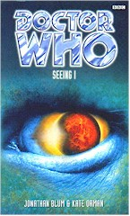

|
Seeing I
|
BASIC PLOT DOCTOR COMPANIONS MATERIALISATION CIRCUIT Pg 177 In the Oliver Bainbridge Functional Stabilisation Centre, a little over three years later. It's a glorious description as well: 'tortured clockwork'. Pg 189 It stops to pick Rachel up... Pg 189 ... then it arrives near, but not too near, Samson Plains. Pg 249 Back in the OBFSC. Pg 273 The Doctor takes a side-trip to Gallifrey and, it turns out, Neo Sydney to get a new suit. Pg 277 It returns to a junk-yard on Ha'olam. PREPARATORY READING CONTINUITY REFERENCES Pg 1: "Even now, her mind was full of burning wires and thin, freezing air and the taste of the Doctor's skin." Longest Day and Dreamstone Moon. Pg 2 "No, the Earth embassy had closed years ago, during the war." The Dalek Invasion of Earth. Pgs 3-4: "She scrambled along the metal wall, pulling at the grab-handles, shouting Stop! Go back! We have to go back!" Almost like Dreamstone Moon, but not quite. In fairness, we might just not have seen this bit happen. Pg 5 "She looked down in surprise. A very small and mangy cat was circling round her ankle." There's a suggestion that this is the TARDIS incorporated as a cat, as we saw way back in Cat's Cradle: Time's Crucible, but since this one is neither silver, nor sleek, and the TARDIS is not in terrible danger of being destroyed, we can assume not. It's more likely to be the cat that the Doctor picked up in Legacy of the Daleks. If it's not, then that one probably starved to death in the TARDIS while the Doctor was away from it for three years. It's also interesting to note that said cat is frequently used as an occasionally rather heavy-handed metaphor for the Doctor. "But she was too tired to explain about the Kusks and the Dreamstone and the TARDIS." The references to Longest Day and Dreamstone Moon do ease up after a while, but not by much. Pg 6 "Don't mention his body lying there as you stumbled away and the taste in your mouth." This is the all-important kiss, from the end of Longest Day. Pg 7 "She wanted space-heroine Sam Jones, who stared down the monsters, who was sharp and resourceful and always, always cool. Who had her own series and a range of posable action figures." Kind of like Benny, then. "They had cut his face his skin was as cold as ice he was not moving there was silence..." Longest Day again. Pg 8 "blowing desperate blowing wake up lips pressed hard against his sandalwood blood frost ozone sweet pressing and pressing wake up goodbye kiss..." Longest Day again, although in a wonderful piece of continuity, the last four words are re-iterated from the end of Dreamstone Moon as well. "Hell, she'd already met a bunch of his ex-friends who had gone on fighting for what they'd believed in." Kramer from Vampire Science, Litefoot from The Bodysnatchers, Jo from Genocide. That's about it. Pg 9 "One of the stories was about the disaster at Mu Camelopides. There was no mention of a teenage girl being found on the scene, trying not to cry as she was bustled on to the last ship out with all the other evacuees." Dreamstone Moon, but see Continuity Cock-Ups. Pg 11 "The dream with dark hair ambushed her again that night." Dark Sam, from Alien Bodies. "The room was a bedsit in King's Cross." The ubiquitous bedsit in King's Cross, a very brief line from Alien Bodies, but the thing that, somehow, everyone remembers about Dark Sam. There's loads more description here and on the next page, the upshot of which is that Sam now appears to be aware of the existence of Dark Sam and... Pg 12 "Somehow she knew it. That this was who she should have been, left to her own devices. That getting stuck in a cheap bedsit and a crap job and the tail end of a buzz going sour was where she should be, a million miles away from the TARDIS." ... she knows that she's been altered, although it's possible that she thinks this is only because she met the Doctor, not or any more sinister reasons. See Unnatural History. Pg 13 "Lacaillans moving gracefully through the crowds. A Caxtarid buzzed by on a bicycle." Lacaillans are from Return of the Living Dad. Caxtarids are from Return of the Living Dad and The Room With No Doors. Pg 14 "The ornithopter rose slowly from the ground." These are the buses on Ha'olam, and were also the means of transport in Morgaine's world in Battlefield. Probably a coincidence. Pg 17 "Sam couldn't help smiling. 'Typical,' she said. 'The good-looking ones are always gay. Or married.' 'Or alien,' grinned Ramadan, not knowing why she flinched." We know why, of course, because we read Longest Day. Pg 19 "It had been in that harrowing week after he'd escaped from the Tractites." Genocide. There follows a description of what happened in the TARDIS after that adventure. "Eventually she'd had to go to her own bed, taking Jasper the bat with her, leaving his twin Stewart to keep a beady eye on the Doctor." We don't know why Sam took a bat to bed with her, but we do know that the two bats were named in Vampire Science and first seen in the Telemovie. Pg 21 "There was an awful moment where they didn't kiss." This, which is part of a flashback to the period immediately after Genocide, suggests that Sam's feelings for the Doctor go back a long way. "She'd run away. And when he came looking for her she ran away from him again." Longest Day, Dreamstone Moon. Pg 25 "Imogen found itself afflicted with a particularly odd strain of umph which spray-painted KILROY WOZ 'ERE graphics all over its annual report." Imogen was a company first mentioned in Transit. "Kisumu Interplantary's intranet collapsed." While the Dione-Kisumu company appeared in SLEEPY. Pg 26 "Then the vultures did highly technical things to the umphs' code, which defied the human ability to wrap in an anthropomorphic metaphor." This is only continuity in that it's a great example of Orman's (or Blum's) typically self-aware style of narrative. "to discover that their umphs had invaded from Gray Corp's system" Kursaal. "Samantha Angeline Jones" This is only the second time we've had Sam's middle name confirmed; the first was in Alien Bodies. The last, oddly enough, will not be in The Gallifrey Chronicles, because it appears to be different in that story. Pg 27 "It had been such a joy for him to create the umphs - writing the kernel, teaching their routines to talk among themselves and their code to recombine - and watch them rewrite their own bodies into something more complex and unpredictable than he could ever have imagined on his own." This is very similar to how the Doctor builds his train set in 'Model Train Set' in Short Trips. "I know she was there on the Kusk ship, I know she was on Mu Camelopides - but then where did she go?" Dreamstone Moon. Strictly speaking, Mu Camelopides is a sun and she wasn't on that, but we know what he means. Pg 30 "The receptionist stared down at Bowman James Alistair 481/9-85/0-X75/54." The Doctor uses the pseudonym that he picked up in the Telemovie. Pg 37 "She walked between the rows of grunt e-kaatib cubicles." Little bit of random information for you here: Kaatib, on Earth, was the first programme that allowed you to type in Arabic. Bet you didn't know that. Pg 40 "You didn't bloody well need to be turned into a Dalek or a Cyberman to lose any trace of humanity." War of the Daleks. It's not clear how Sam knows about Cybermen. Pg 44 "The implants are hundreds of times safer than the old synch-op links." We saw these back in Warriors of the Deep. Pg 45 " - living in a bedsit in King's Cross - " Alien Bodies again. Pg 49 "A brightly coloured rug hung on the wall, next to the inevitable holo-ad, this time for Fizzade." The drink of choice in Paradise Towers. Pg 50 "And then the port rotated and opened, like an eye staring back at him for a moment, and let him in." Just like the Eye of Harmony did in the Telemovie. Pg 52 "If there were other Time Lords on the planet, he thought, and they realised he was here, they would be his deadly enemy. Not to mention deadly dull. It was becoming positively fashionable to be a renegade these days, he thought, with a rueful smile." Indeed. Pg 55 "With a quick flip of the transfer module he uploaded every known completed fragment of the manuscript of Down Among the Dead Men Again and mailed it to Senior Assistant Vice President Sellwood." This would appear to be Benny's sequel to her best-selling novel. See also Continuity Cock-Ups. Pg 61 The Doctor's prison clothing includes "Battered leather shoes which didn't fit at all." This is a reference to the Telemovie and a fairly unsubtle way of saying that the Doctor is not going to enjoy himself here. "What he was not expecting was to see the new inmate lying sprawled on the floor of the cell." The Doctor is feigning illness, the oldest trick in the book, just as he did in Genocide. Pg 62 "The man's hand shot up and brushed across his face. It felt like walking into a cobweb. Rifaat crumpled." This is like the Seventh Doctor of Battlefield and Survival. Pg 65 "'Good afternoon,' said the Doctor. 'Would you happen to have anything without meat in it?'" This is, interestingly, the first time that the Eighth Doctor has mentioned anything approaching a vegetarian diet, the like of which his previous incarnation stuck to with alacrity (see Human Nature). Given that we've seen this one eat meat loads of times, we can assume that he's just trying to be difficult here, rather than it being a lifestyle choice (although he could be in a phase of going back to it). Pg 68 "He'd escaped from every prison imaginable, from the Tower of London to a Klein sphere." The First Doctor mentions being imprisoned in the Tower of London in The Sensorites. Klein Spheres are a favourite of Orman's. Pg 71 "'That's a perigosto stick,' said the Doctor. 'You use it in a game of four-dimensional juggling.'" Ah. So that's what it's for. The Green Death, originally, although also mentioned in Deadly Reunion and Goth Opera amongst numerous others. Pgs 71-72 "'You know,' said the Doctor, 'when I was still a schoolboy, one of my teachers would always insist that - given my attitude - I would never go far.'" It was Borusa, and it's quoted in The Deadly Assassin. Pg 80 "Eurogen Village" Eurogen Company merged with the Butler Institute, from Cat's Cradle: Warhead, to create Eurogen-Butler Corp, aka EB. They're important in Another Girl, Another Planet. Later they become the Spinward Corporation, seen in Deceit. But see Continuity Cock-Ups Pg 98 "Managing to keep half a dozen pre-teens from getting themselves killed over a weekend was more of a challenge than anything Daleks or Tractites could have thrown at her" War of the Daleks, Genocide. Pg 102 "Would you like to hear about the time the Tractites held me prisoner?" Genocide. "'Mr Bowman,' said Akalu. 'Where are you from?' 'Andromeda,' said the Doctor. 'My mother was abducted by little green men.'" This may well be true: the Telemovie. Pg 103 Mention of Romana. Pg 107 "Despite Leonardo's best efforts, he had never been much good with a sketch." Reference to a meeting which was presumably also the one mentioned in City of Death. Pg 112 "If it had not been for the awkward angle of head and shoulders, she might have looked as though she was only sleeping. Sleeping in the moist soil, among the crushed begonias." This sounds like the description of the dead Miranda in Sometime Never..., itself taken from the front cover of Father Time. It's probably a coincidence. Pg 115 "'I've got to keep going,' whispered the Doctor. 'I mustn't stop for anything.'" Ace's parting words to the Doctor in Set Piece. Pg 120 "I bet it's captured surplus from the Thousand Day War." The war with the Ice Warriors which we heard about in Transit. Pg 122 "All those morning runs finally paid off." As first mentioned in The Eight Doctors, and practically every book since. Pg 125 "It was weird, she hadn't been on the front line like this since Dreamstone Moon - good grief, more than two years ago now." You'll've guessed that this is a reference to Dreamstone Moon by now, won't you? Pg 128 "Leah's going to try again to set up a Livingspace project on Earth, help with the reconstruction." After The Dalek Invasion of Earth, of course. Pg 133 "I want to be on Stella Stora on the third day of Krazyx, 2042." Stella Stora was mentioned as being the location for an unrecorded Sixth Doctor adventure in The Trial of a Time Lord (Terror of the Vervoids). Pg 140 "I could name half a dozen of your school chums and all sorts of ancient lore and legends from Gallifrey." It appears that DOCTOR has, somewhat ill-advisedly, been reading Divided Loyalties. Pg 144 "I knew we should've taken that left turn at Albuquerque" This, oddly enough, was a Bugs Bunny quote originally, but it's a phrase that has entered the language. It means, roughly, a direction that takes you somewhere completely out of the ordinary. Pg 149 "Through a set of proxies and dedicated AI trading agents, INC owns 64 per cent of Temporal Commercial Concerns" Longest Day, and this finally begins to give an explanation for the human experimentation that was going on in that novel. Pg 150 "But Sam had seen mindless human subjects before." Vampire Science. As well as the Coal Hill cast of The Eight Doctors, if we're being uncharitable. "They own significant interests in companies from TLA to DMMC." The DMMC is the Dreamstone Moon Mining Corporation which, one assumes, after the events of that novel, is now defunct. But you never know. TLA is from Blue Box. Pg 152 "Soft-skinned people in cages, watching her with empty eyes." Vampire Science again. Pgs 154-155 "The cat had stopped by, and now lay snoozing between them. Idly, Sam stroked the back of its head, smoothing out its clumps of matted fur. Heaven only knew what kinds of adventures this cat had got up to in its life, whether it had been cruel or kind, whether there were any kittens left behind or outlived. All it had done was live." As mentioned above, it's unclear where the cat comes from - it might be the one from Legacy of the Daleks. It might also be the TARDIS expressing itself as a cat as it did all those years ago in Cat's Cradle: Time's Crucible etc. It might also be the incarnation of Life, albeit somewhat incomprehensibly (see below). It might, indeed be all these things and more. What it definitely is, is a metaphor for the Doctor, made clear in the above paragraph, and doubly so by the surreptitious quoting of Terrance Dicks' 'the Doctor is a hero' speech which we have seen so many times before. Pg 160 "He could kill a bunch of vampires or Zygons and turn around and talk about the sanctity of life." Indeed. Vampire Science and The Bodysnatchers. The hypocrite. Pg 161 "She knew all the sorts of things you could hide in junkyards." An Unearthly Child, Remembrance of the Daleks and, in Sam's case, The Eight Doctors. Pg 162 "Peevishly swatting Sam's hands away, as if time and pain and death and all that were just minor annoyances." The Doctor, more specifically, he of the NAs. But note that this is the cat doing it. Pg 163 "She never drank coffee. Almost never. She was on her third cup." Sam didn't drink anything with caffeine in it after messing around with drugs once, as we learned in Longest Day. The fact that she now occasionally does is because she's growing up, we tell you, damn it; no, she is! Pg 164 "Rachel had folded her arms and asked how come someone who was supposed to be the champion of all life everywhere was killing off Daleks and things left, right and centre." Remembrance of the Daleks, specifically. Probably Sam's referring to when she learned about that in War of the Daleks. Pgs 167-168 "It was weird: she had a vague but oddly sharp memory of another cat like this one - like hers - prowling across the sands of Hirath." Longest Day, although I don't remember that happening. Pg 181 "A greater green chatterer flapped past, muttering about income tax." This may be an oblique reference to Robert Holmes, writer of The Sunmakers. "It was about three years after she left me that I saw Ace again." Love and War, Deceit. Pg 183 "The Doctor was looking at the bear. 'I know everything, Odin,' he murmured. 'I know where you hid your eye in the fearsome well of Mimir.'" As Cornell-Day-Topping commented in The Discontinuity Guide, the eye that McCoy winks in his theme sequence is the one that Odin is said to have sacrificed for wisdom. Pg 188 "The Doctor grinned, yanked the handbrake." This is the first mention of the TARDIS having a handbrake, which we will later see in the new series The End of the World. Pg 195 Brief reference to transmat, first seen in The Seeds of Death. "'At first glance, that's what I thought,' said DOCTOR. 'But in fact there are hundreds of years' worth of data. Someone has erased almost all of it." The seventh Doctor in Transit. "If we get hold of Jones again, threaten to kill her. He'll do whatever we want." Like in Vampire Science. Pg 196 "But her memory kept tossing out images of him diving with passion into everything from cooking breakfast to trying to play the trombone." Cooking breakfast is Vampire Science. Playing the trombone remains, we are pleased to say, unrecorded. "Come to think of it, weren't the dull passionless ones the ones he'd left home to try to get away from?" The War Games. Pg 197 "'I tried to perform mouth-to-mouth on you.' He looked puzzled. 'Nothing wrong with that.' 'There is when you try to get the tongue in.'" Longest Day. "They felt like hands that could really use some holding on to." An image that's been made much of in the new series. Pg 198 The Doctor tells the story of his hunt for Sam. Longest Day and Dreamstone Moon. Pg 201 "No no no wait wait wait wait wait." A double-whammy of monosyllables, just in case you'd got complacent about them. Pg 202 "'Number fifteen?' asked Sam." This is the first time that you get a reference to the Doctor and Sam having special code numbers for different situations. It's based on a JNT comment about the Season 18 TARDIS crew and becomes hugely relevant in Unnatural History. Pg 203 "'I know what you're wondering,' said the Doctor cheerfully. 'Did he fire that thing six times or only five? Well, to tell you the truth I think I've lost count, sorry about that. So you've got to ask yourself one question. Do you feel lucky... sir?'" This is a quote from Dirty Harry, famously lampooned all over everywhere. One of the best examples is in Terry Pratchett's Guards, Guards. "'That's a banana,' he said." Just like in The Empty Child/The Doctor Dances. "This is a Borelli elemental compositor, that's a tritium-powered something or other, and unless I'm much mistaken, that's a Kosnax fruit machine." The Vardan/Kosnax war was mentioned in Time-Flight. Pg 205 "'Oh no,' he breathed. 'What!' she said. 'What is it?' 'Not the mind probe,' he said." The Five Doctors, very, very famously. "It's got thirteen settings" is a misquote of the description of the interrogation device in The Deadly Assassin. Pg 206 "He held the torch up under his chin and made a dramatic face at her. 'Its aliiiiiive.'" Just what was being broadcast when the Doctor regenerated in the Telemovie. Pg 207 "Deposit a penny in a bank and travel forward a thousand years to collect the interest." The Time Meddler. Another reference to King's Cross. Alien Bodies. Time Lords might seed a world with "something that might develop into something to ease their chronic infertility." Which we heard about in Cat's Cradle: Time's Crucible and was, kind of, resolved in Lungbarrow. Pg 210 "'Please,' sniffed DOCTOR. 'I prefer to think of myself as their unpaid scientific adviser.'" The UNIT years. Pg 214 "I've seen what goes on with TCC." Longest Day again. Pg 225 "It happened back when I was a student. Savar was a Time Lord who went on a mission in his TARDIS, but something went wrong and he had to abandon ship." The final fate of Savar is revealed in The Infinity Doctors. "And then they found out that since it was Savar's TARDIS, none of their loot would work without his eyeprint." Consistent with the Telemovie. Pg 227 "'Something like that,' said the Doctor. 'A compound I?'" Amongst the many puns on I/Eye etc. that pepper this book, this is almost certainly the worst. (Robert Smith? takes a bow for that one.) "Sam looked down and realised she was holding the pouch from his sash. When had he-" This sounds like good old transmigration of object, from The Ambassadors of Death. Pg 228 "'Tinclavic,' murmured the Doctor. 'It's a sort of metallic polymer.'" We hear about Tinclavic in The Visitation. Pg 230 "Was Hirath one of yours? This looks like the sort of hardware that was grafted into the computers there. Was TCC running those experiments for your benefit? Mm? And then there was that one time tree that was taken from Hirath to Tractis." Longest Day. And, at last, an explanation for the Time Tree in Genocide. Pg 233 "'Ah,' said the Doctor. 'Everlasting matches.'" Doctor Who in an exciting adventure with the Daleks et al. Pg 244 "'Would you destroy them?' said the Doctor. He had suddenly grabbed her with his stare. She was blushing all over. 'In retribution for their crimes? Or for the greater good? Would it be right or wrong?'" Genesis of the Daleks. Pg 246 "You wouldn't believe what I've been through trying to keep out of their grubby little clutches." As DOCTOR becomes more like the Doctor, he starts quoting Remembrance of the Daleks. Pg 257 "Take what you've learned and get off this planet before my people do something unspeakable to your timeline." As they have done in the past, most notably in The War Games. The word 'unspeakable' always conjures up images of Sylvester McCoy gurning at Mordred in Battlefield. Pg 270 "'So how'd you get hooked up with Sam in the first place?' Orin was asking the Doctor. 'Oh, it was one of my usual weird fantastic adventures full of improbable illogical events...'" Ha! This was the description that Terrance Dicks used in The Eight Doctors to describe the Telemovie. Here Orman and Blum use it to describe The Eight Doctors. "It was all an astounding coincidence that I should arrive at precisely the moment in time and space where Sam needed rescuing, wasn't it?" Another reference to the way that Sam was a 'planned' companion. See Alien Bodies and Unnatural History. Pg 272 "'I know. They've been having a sweepstake on how long before we ducked out together.' She tossed him a wink. 'I think they're expecting to hear strange wheezing groaning sounds coming from the nearby bushes.'" The cheekiest use of Terrance Dicks' TARDIS dematerialisation sound-noise-description ever. He must be over the moon. Pg 273 "If you're that good at lying, how would I ever know?" The suggestion that the Doctor's just a really good liar, and not inept at all, goes back to Vampire Science. Pg 274 "I met a rather nice virtual girl called FLORANCE." Transit, SLEEPY. "Don't bother me, or I'll tell." This is similar to the line the seventh Doctor uses on FLORANCE ("Let me in or I tell") in Transit (pg 250). Pg 276 "He paused, touching his memories of a rose-petal woman with the scent of baking bread, and smiled gently." The incarnation of Life from the NAs. The Eighth Doctor was described as Life's Champion in Vampire Science. It should be noted that only Orman pulls this NA strand of reference into the EDAs; everyone else tactfully ignores it. It's also not clear whether the Doctor thinks the cat is Life, or if he's just using it as a metaphor. Whatever. Pg 277 "There's a tailor in Neo-Sydney who was more than happy to make these up for me." Neo-Sydney was where the seventh Doctor got his white fedora, first mentioned in First Frontier. Pg 278 "'Sam,' he said hesitantly. 'While I was looking for you, the TARDIS put me in touch with my granddaughter, Susan.'" Legacy of the Daleks. Not that he actually spoke to her in that book or anything. "There aren't any Daleks or vampires or mad scientists, I admit." War of the Daleks, Vampire Science, Option Lock (probably). "Nobody else in the universe can do what we do." A quote from The Tomb of the Cybermen. OLD FRIENDS AND OLD ENEMIES NEW FRIENDS AND NEW ENEMIES At the Oliver Bainbridge Functional Stabilisation Centre: Dr David Akalu, Correctional Officer Mahmoud Rifaat, Gamal el-Bayoumi, Ke Resht Jarna, Adnau. In the Eurogen Village: Paul Hamani, Khalaf, Chris, Tamar, Feroz, Leah, Amin, Brian Weissman, Mr and Mrs Lobachevsky, Deeb, Orin, Hanneh, Eric. Also: Shoshana Rubenstein, Mlihi and Zuabi, Ms Salameh, Procedural Expediter Symonds, DOCTOR, Eyal, Rachel, Mataten. And the most annoying receptionist in the universe (unless you've been to my doctor's surgery).
CONTINUITY COCK-UPS PLUGGING THE HOLES [Fan-wank theorizing of how to fix continuity cock-ups] FEATURED ALIEN RACES The OBFSC includes a Lacaillan. Mataten is a Lalandian, identical to a Caxtarid, but of a different caste. The Caxtarids are also referred to as the Ke Caxtari. The I Ship. FEATURED LOCATIONS The I Ship. IN SUMMARY - Anthony Wilson |
|
 |